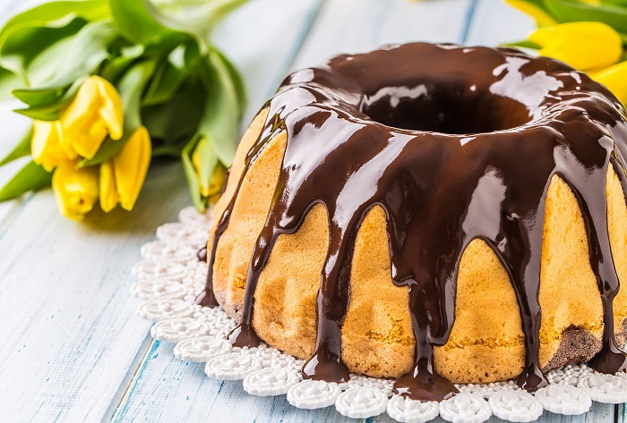

Cantinho da VOVÓ
home
contato
receita
livros
Bolo de Cenoura com Cobertura de Chocolate

INGREDIENTES
Massa
2 cenouras médias, cortadas em cubos 300 g
1/2 xícara de chá de óleo 125 ml
3 ovos
1/2 xícara de chá de Amido de Milho Maizena
1 1/2 xícara de chá de farinha de trigo 210 g
2 colheres de chá de fermento em pó 8 g
1 xícara de chá de açúcar 190 g
Cobertura
1/2 xícara de chocolate ao leite derretido
1/2 xícara de creme de leite
Receita de bolo de cenoura: massa
Pré-aqueça o forno em temperatura média (180°C).
Unte e enfarinhe uma forma de furo central média (20 cm de diâmetro). Reserve.
No copo do liquidificador, coloque a cenoura, o óleo e os ovos, e bata até a massa do bolo de cenoura ficar homogênea. Em uma tigela, peneire o amido de milho maize, a farinha de trigo, o fermento e o açúcar, junte a mistura de cenoura reservada, e mexa com o auxílio de uma espátula até que vire uma massa uniforme.
Disponha a massa na forma reservada e leve ao forno por 40 minutos, ou até que um palito, depois de espetado na massa, saia limpo. Retire o forno e deixe amornar.
Receita de bolo de cenoura: cobertura de chocolate
Faça a cobertura: misture o chocolate e o creme de leite, e espalhe por toda a superfície do bolo. Sirva a seguir. Se preferir, utilize a forma redonda canelada (18 cm de diâmetro). Se não tiver liquidificador em casa, você pode fazer essa receita de bolo de cenoura usando cenoura ralada à mão e uma colher de pau para misturar os ingredientes. Lembre-se de peneirar a farinha e demais ingredientes em pó para não formar pelotas e conseguir um bolo de cenoura fofinho e areado. Regue o bolo ainda quente com a calda de chocolate, para que ela penetre bem dentro.